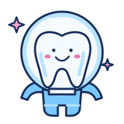
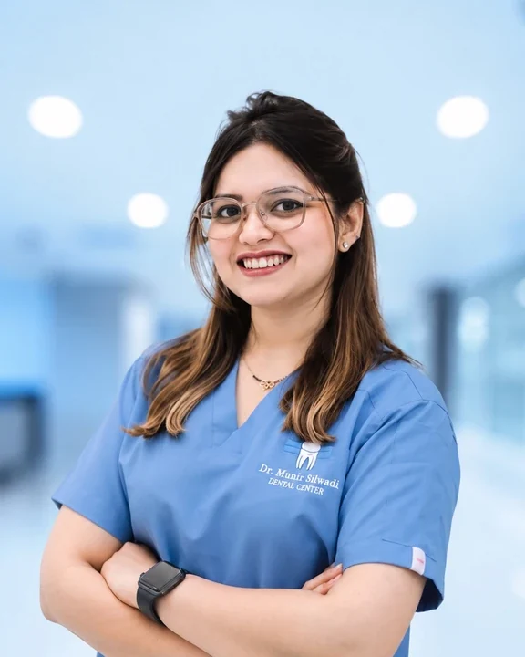
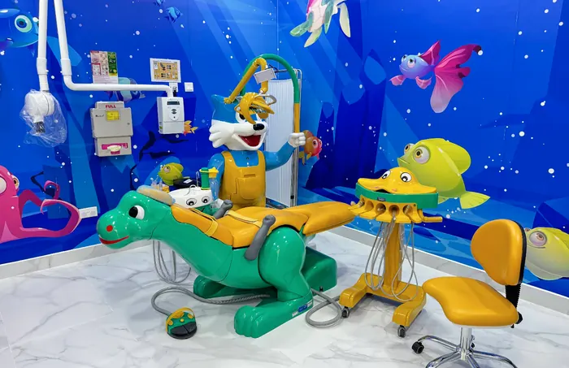
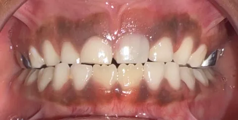
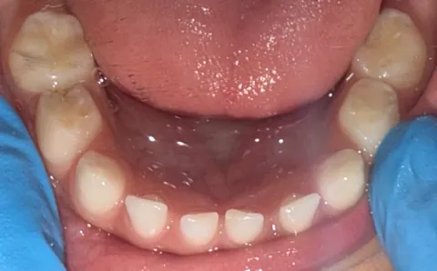
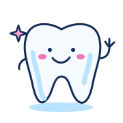

We say hello.
Tell me about your child, what worries them and what helps them feel comfortable.
Hi, I’m Dr. Kashmira. A specialist pediatric dentist, and a familiar face for children finding their confidence in the dental chair.


11+years of clinical experience
MDSPediatric & Preventive Dentistry
DHA + DOHlicensed in the UAE
4 languagesEnglish · Hindi · Marathi · Kannada
A first visit, a worried child, a growing smile.
Let’s start with what your family needs.

A space for little personalities.Check-ups, parent guidance, fluoride, sealants and minimally invasive care. A chance to get familiar with the dentist and talk about everyday habits.
Ask about a visitBehaviour guidance and individual care for children who need more support. Sedation options can be discussed after assessment, where appropriate.
Ask about a visitRestorative and pediatric endodontic care, with the options explained to you. Treatment is planned around the tooth, your child and their stage of development.
Ask about a visitSpace management, habit counselling, Myobrace and early orthodontic assessment, including Invisalign First when suitable.
Ask about a visitAssessment and management of dental trauma and other urgent dental problems. Call to discuss availability; online messages are not monitored as an emergency service.
Ask about a visitTell me about your child, what worries them and what helps them feel comfortable.
A chance to meet, look around and assess their teeth, with explanations along the way.
Understand the findings, discuss your options and decide on the next step for your child.

Some children walk in full of questions. Others need a little time to feel at home.
My work brings together specialist pediatric dentistry, prevention and a thoughtful approach to anxious children and children with additional healthcare needs. There’s room to ask questions, explain what’s happening and find the next step together.
Meet the person behind the smileA few photographs from my clinical work.
Explore the full collection by treatment.



A tooth, a rainbow or a rocket? Choose your co-pilot, then send a smile into the universe.
Your tooth buddy is here to say hello.
Start with what’s on your mind.
Yes. Please mention any worries when you arrange the appointment. Dr. Kashmira works with anxious children and uses behaviour guidance to help them become familiar with the visit. The approach is adapted to each child.
Yes. Her clinical experience includes caring for children with autism, ADHD, cerebral palsy and other healthcare needs. Share any sensory preferences, medical history or support that helps your child before the visit.
Dr. Kashmira has training in nitrous oxide conscious sedation and experience in general anaesthesia case planning and coordination. Suitability, setting and availability need an individual assessment; ask about these when booking.
Dr. Kashmira currently practises at Dr. Munir Silwadi Dental Centre, Al Raha Mall, Abu Dhabi. Contact her directly to confirm availability and arrange your visit.
Bring relevant medical and dental information, a list of medicines and any previous X-rays you have. Mention your child’s concerns and communication preferences so the visit can be planned around them.